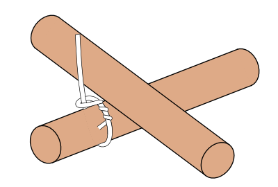
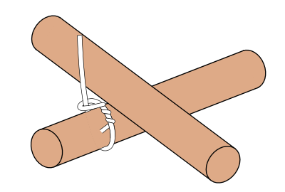

- Der Bund wird mit einem Zimmermannsklang begonnen und einer Achterschlinge auf Zug geendet. Wichtig ist, dass der Zimmermannsklang auf der tragenden (senkrechten) Stange unter der Querstange gebunden wird.
Die Umwindungen sind an einem Rundling immer außen am anderen innen zu legen. Je nach Dicke und Länge das Seiles sind zwischen 3 und 5 Windungen zu legen.
Das Seil ist immer unter Zug zu halten!
- Anleitung Startknoten
- Anleitung Endknoten